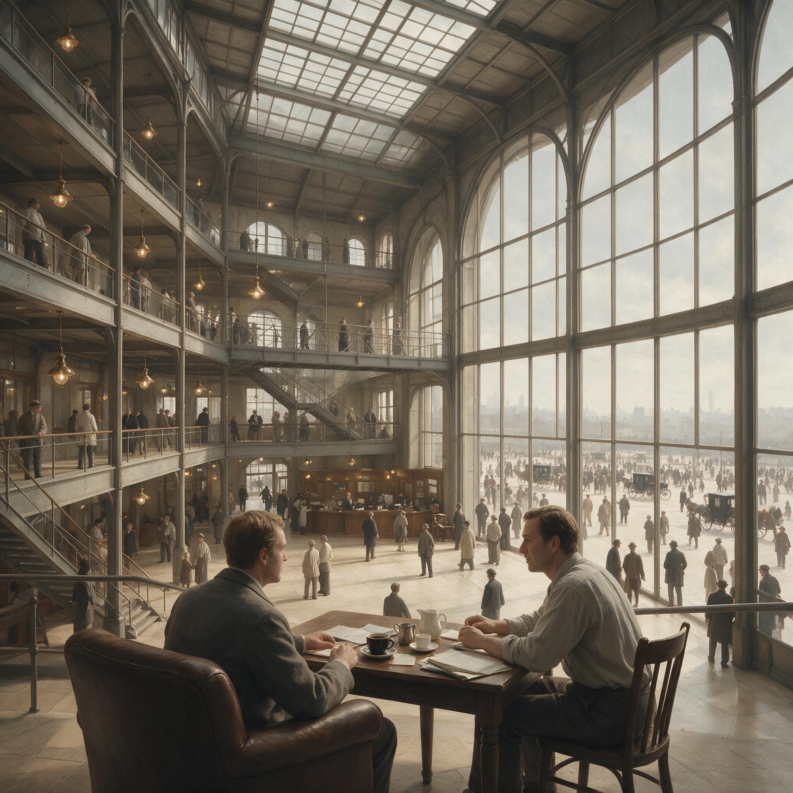

第 9 章
无限场景赌注
北京银河SOHO的地下商业区，一家店面的装修围挡在2017年9月下旬被拆除。路过的上班族看到的不是咖啡馆常见的暖色木饰面和软沙发，而是一排灰色台面、几台全自动咖啡机和一个取餐架。没有座位。一张也没有。这家店的门头上印着一个蓝底白字的标志：瑞幸咖啡。
英文名luckin coffee。当时没有人在意这个名字的含义。围挡拆除后，店面又沉默了将近一个月。直到10月28日，第一杯咖啡从全自动咖啡机的出液口注入纸杯。钱治亚在开业现场拍了一张照片发到工作群里。照片里是那杯咖啡和空荡荡的店面。
陆正耀的回复只有四个字：量不够快。钱治亚和陆正耀在创办瑞幸之前的十年，一直在做出行。神州租车从2007年起步，用价格战和规模扩张在租车市场撕开口子，2014年在香港上市。2015年神州专车上线，用补贴和充返活动在滴滴和优步的夹缝中抢到一块地盘。
出行行业教会这个团队的东西不是品牌建设——品牌在出行领域的作用微乎其微，乘客选车看的是价格和响应速度——而是另外一套能力：用资本撬动规模，用补贴获取用户，用数据优化运营效率，再把规

瑞幸咖啡银河SOHO早期门店
AI 生成插图，非史实影像。
模和数据转化为下一轮融资的估值依据。这套能力在出行领域已经被验证过。
现在他们要把它移植到咖啡市场。咖啡市场在2017年的中国是一个看起来很美的赛道。年增速超过15%，但人均年消费杯数不到五杯——日本是两百杯，韩国超过三百杯。
星巴克自1999年在北京国贸开出大陆首店，到2017年已经在中国运营超过两千八百家门店。
它的品牌叙事围绕“第三空间”构建——一个介于家与办公室之间的社交场所。舒适的座椅、精心设计的灯光、咖啡师与熟客的互动、背景音乐里永远播放的爵士乐。
这套叙事通过近二十年的门店体验和营销投入，在中国城市中产消费者的心智中建立了一个稳固的等式：咖啡等于咖啡馆等于星巴克。当一个消费者产生“去喝杯咖啡”的念头时，星巴克是默认选项。
这个等式对于一个新品牌意味着什么，钱治亚和陆正耀很清楚。他们在神州租车时期见过同样的结构——租车市场的心智被传统租车公司占据，神州没有去正面挑战“租车公司”这个品类认知，而是用“租车加专车”的组合打法绕开了正面竞争。
陆正耀在内部会议上反复讲一个逻辑：不要在对手最强的阵地上开战。对手最强的是“咖啡馆体验”，那就不要做咖啡馆。对手最弱的是便利性和价格，那就从这里打进去。
这个决策不是理论推演的结果，而是对竞争现实的务实判断。如果瑞幸正面挑战星巴克的“第三空间”，它需要做三件事：在核心商圈拿大面积铺位、按星巴克的标准装修、用数年时间积累品牌认知和消费者情感认同。这三件事都需要时间，而时间恰恰是瑞幸创始团队最不能接受的成本。
不是他们没有耐心，而是他们选择的商业模式——资本驱动的高速扩张——不允许以十年为单位来规划回报。2017年底，瑞幸的品牌策略文档中出现了一个词：“无限场景”。
文档中对它的定义是：让咖啡出现在办公室、校园、加油站、医院大厅、地铁站出口——任何消费者可能需要一杯咖啡的时间和地点，而不必专门去一个叫“咖啡馆”的地方。这份文档的语言风格是互联网产品经理式的：场景覆盖、用户触达、转化率、复购频次。它没有使用任何定位理论的术语。没有“品类聚焦”，没有“心智阶梯”，没有“差异化定位”。
这不是偶然的措辞选择。这意味着瑞幸从一开始就没有打算进入星巴克占据的那个品类——“咖啡馆”。它要做的是一种不需要“馆”的咖啡生意。
这个战略选择在操作上具体化为两个切入点。第一个是外卖咖啡。用户通过瑞幸的APP或小程序下单，选择配送或到店自取。配送由顺丰和美团承接，承诺三十分钟内送达。
第二个是平价咖啡。通过大规模补贴，将单杯咖啡的实际支付价格锚定在星巴克同类产品的三分之一到二分之一。
两个切入点叠加，构成了一个模糊但实用的定位组合：便利加便宜。定位理论的支持者会指出这个组合的问题：它不是一个定位。
按照特劳特和里斯的框架，定位是在消费者心智中占据一个清晰、独特、有差异化的位置。“便利加便宜”不是差异化——任何有足够资本的企业都可以做便利和便宜。它不构成心智壁垒，只构成成本壁垒。而成本壁垒在资本充裕的市场中是最容易被突破的。
但瑞幸团队在2017年底并不认为这是一个问题。他们的推演路径是：先通过便利性和价格建立使用习惯，等用户基数足够大、消费频次足够高之后，再回头来做品牌心智的沉淀。先圈地，再深耕。
这个推演在逻辑上并非全无道理——互联网平台企业大多遵循类似的路径：先用免费或补贴圈住用户，再用网络效应和数据优势建立壁垒。
但这里有一个关键的错位：咖啡不是社交网络。社交网络的用户粘性来自网络效应——你的朋友都在用微信，你不用微信就会失联。咖啡的用户粘性不来自网络效应——你用瑞幸不影响我用什么——而来自口味偏好、品牌认同和消费场景的心智锚定。网络效应是结构性的护城河，补贴买来的使用习惯是沙子堆的墙。
2018年1月1日，瑞幸在北京、上海等十三个城市同时上线试运营。首单免费。这个政策不是促销手段，而是获客引擎的核心部件。用户下载APP、注册手机号、领取一张免费券、下单、等待配送或到店自取。
整个流程被设计得极为紧凑：从下载到完成首单的平均时间不超过七分钟。
神州租车的运营团队带来了一个关键经验——拉新成本必须可测量、可优化、可规模化复制。首单免费的成本由公司承担，换来的是一个注册用户和一套行为数据：手机号、位置、消费时间、口味偏好、支付方式。
同期上线的还有裂变机制。用户在APP内点击“邀请朋友喝咖啡”，生成一张带有个人二维码的分享图片。朋友通过二维码注册并完成首单后，双方各得一张免费券。这个设计借鉴了当时拼多多和趣头条的社交裂变模型，但做了简化——不需要拼团，不需要砍价，注册就送。规则简单到一句话就能说清楚：你请朋友喝一杯，瑞幸请你喝一杯。
裂变的效果在数据上迅速体现。2018年第一季度，裂变带来的新用户占新增用户总数的37%。
第二季度上升到42%。传统咖啡品牌的获客路径是：开店、吸引路过客流、通过体验和口碑积累回头客、回头客再带来新客。这个周期的基本单位是月甚至年。瑞幸的裂变引擎把一个新用户的获取周期压缩到了小时级——一个用户在上午十点收到朋友发来的邀请图片，十点零七分完成注册和首单，十点零七分开始，他就成了瑞幸的增长统计数据中的一个数字。
补贴模型同样经过精密测算。早期政策是“买二送一”——用户购买两杯咖啡，账户自动获得一张免费券。2018年4月升级为“买五送五”——购买五杯送五张免费券。
这个设计的关键在于：它不是直接打折，而是把优惠锁定在复购行为上。直接打折——比如全场七折——用户的获益感知在单次消费中就被消耗掉了。但“买五送五”把优惠拆分成十次消费行为：五次付费加五次免费。用户为了使用赠送的券，必须反复打开APP、反复下单。每一次复购都在强化行为惯性。财务部门在2018年第一季度做了一版测算。
每获取一个新用户的综合成本——含免费咖啡成本、配送补贴、营销分摊——约为四十八元。每个用户的平均首月消费次数为二点三次。单杯综合成本——含原料、包材、配送——约为九点八元，实际售价扣除补贴后约为七点二元。每卖出一杯咖啡，公司净亏损约二点六元。
但这版测算的最后一行写着一组让投资人愿意继续掏钱的数据：用户第二个月留存率为41%，留存用户的月均消费次数上升至三点一次。陆正耀看到这组数字后，在投决会上说了两个字：继续烧。
“烧”是一个后来被舆论反复咀嚼的字眼。但在2018年初的决策现场，“烧”的逻辑在财务上是自洽的：中国咖啡市场空间巨大，心智尚未饱和，先发优势的窗口期有限。如果能用最快的速度把规模做上去——门店数量、用户数量、订单数量——就能在资本市场获得定价权。有了定价权就能继续融资，有了融资就能继续扩张。循环闭合。这个逻辑链条里没有心智积累的位置。不是疏忽，是主动放弃。
2018年5月8日，瑞幸宣布正式营业，同时发布了一组数据：试运营期间累计完成订单约三百万单，服务用户超过一百三十万。
发布会上，钱治亚说了一句被媒体广泛引用的话：“我们要让咖啡回归饮料本身。”这句话的潜台词是：咖啡不需要承载“第三空间”的生活方式叙事，不需要消费者对它产生情感认同和文化想象，它就是一种需要被便利获取和高效消费的日常饮品。茶叶、可乐、矿泉水——没有人会为这些饮料赋予“空间”的意义，咖啡也不应该例外。
这句话在品牌策略上的含义是消解性的。它把咖啡从一个具有丰富心智关联的品类——舒适、社交、专业、品质、生活方式——压缩成一个功能性的商品：提神、解渴、喝掉、扔掉。功能性商品的品牌忠诚度天然脆弱，因为它被替代的成本极低。今天喝瑞幸因为便宜方便，明天有更便宜更方便的选择出现，切换成本接近于零。
2018年夏天，瑞幸的市场部做了一次小范围用户调研。问卷里有一道开放题：“提到瑞幸咖啡，你最先想到的是什么？”回收的答案集中在三个词上：便宜、方便、送得快。几乎没有人提到“好喝”。
同期，一家第三方机构的品牌健康度追踪报告显示，在一线城市咖啡消费者中，“星巴克”的品牌联想词云包含“舒适”“社交”“品质”“专业”等词汇；“瑞幸”的词云则是“便宜”“优惠券”“外卖”“新品牌”。
这组对比被送到了瑞幸管理层。它没有改变任何决策。因为同一时期，瑞幸的门店数量正在以每月超过一百家的速度增长。到2018年9月，第两百家门店在上海新世界大丸百货开业；同月，北京故宫箭亭店开业。故宫店的象征意义巨大——一个成立不到一年的品牌，把门店开进了中国最具文化地标性的场地。媒体铺天盖地报道“瑞幸速度”。
投资人的电话打到陆正耀手机上，关心的不是盈利时间表，而是下一轮融资的估值预期。故宫店开业当天，钱治亚在现场接受了几家媒体采访。她说故宫是中国文化的象征，咖啡是世界文化的载体，瑞幸希望成为连接两者的桥梁。
这是品牌传播的标准话术，它在媒体上产生了预期的效果——多家主流媒体以“瑞幸咖啡入驻故宫”为题做了报道。但在同一天的内部运营会上，讨论的焦点是另一个问题：故宫店的单量不及预期，因为游客群体与瑞幸的核心用户画像——写字楼白领——匹配度不高。会议决定将故宫店的运营策略调整为“品牌展示优先，销售考核次之”。
这个决定本身在经营上是合理的——故宫店的性质决定了它不可能像写字楼大堂店那样追求出杯量。
但它暴露了一个结构性的裂缝：瑞幸的品牌动作和增长动作是两张皮。品牌讲故事——故宫、无限场景、咖啡回归饮料；增长跑数据——出杯量、新用户数、复购率、单店日销。两个系统各自运转，之间没有咬合点。品牌故事不为增长服务，增长数据也不反哺品牌资产。
这个裂缝在2019年初进一步扩大。2019年1月，瑞幸宣布门店数量突破两千家，计划年底达到四千五百家。这个扩张速度在全球零售史上几乎没有先例——星巴克在中国达到两千家门店用了十七年，瑞幸用了不到十四个月。
支撑这个速度的不是单店盈利模型的成熟——事实上绝大多数门店在单店核算层面都是亏损的——而是持续不断的资本注入。
2018年12月，瑞幸完成B轮融资两亿美元，投后估值二十二亿美元。投资协议中附带了对赌条款：如果瑞幸未能在规定时间内完成上市或被并购，创始团队需要承担相应的回购义务。
对赌条款的具体内容从未公开披露——这在私募融资中属于常规保密信息——但它的存在本身改变了瑞幸内部决策的优先级排序。对赌条款意味着一个倒计时的时钟被按下了启动键。从B轮融资完成的那一刻起，瑞幸的管理层不再只是在对“市场机会”和“品牌战略”做判断，而是在对一个有明确到期日的财务义务做判断。
三十六个月——这是一份典型的对赌期限。三十六个月内必须完成上市或被并购，否则触发回购条款。当企业必须在三十六个月内完成从创立到上市的全流程时，任何需要超过三十六个月才能见效的投入都会被系统性地排到优先级列表的底部。
心智积累恰恰是所有品牌投入中见效最慢的一种——它不以月为单位，不以季度为单位，甚至不以年度为单位。它通常以五年为基本单位。五年才能在消费者心智中初步建立一个稳定的品类联想，十年才能形成真正的品牌资产沉淀。三十六个月的对赌时钟容不下五年。
这不是理论推演。它在瑞幸的资源分配中体现为具体的数字比例。2018年全年，瑞幸的营销费用中，效果类投放——信息流广告、应用商店竞价排名、裂变活动成本——占比超过80%。品牌类投放——TVC、户外大牌、IP联名——占比不到20%。
而在那不到20%的品牌投放中，大部分又集中在“瑞幸速度”的PR传播上——门店突破多少家、融资多少亿、估值多少亿——这些内容本质上是在为资本市场讲增长故事，而不是在消费者心智中建立品牌认知。效果类投放的逻辑是：每一块钱投下去，必须能在后台看到可测量的回报——下载量、注册量、首单量、复购量。这个逻辑本身没有问题，问题在于它只能测量短期行为指标，无法测量长期心智指标。
一个用户因为看到信息流广告下载了瑞幸APP并完成了首单——这个转化在后台是清晰的。但一个月后这个用户还在用吗？三个月后呢？半年后呢？当补贴退坡后呢？这些问题在效果投放的数据面板上看不到答案。
不是因为数据不够多——瑞幸的数据系统每天处理数百万条用户行为记录——而是因为数据的时间维度太短。一个只运营了十二个月的品牌，拥有的最长用户数据也就是十二个月。它无法回答“三年后会发生什么”这个问题。
但资本市场不需要等三年。资本市场需要的是下一季度的财报。2019年5月17日，瑞幸咖啡在纳斯达克上市。从公司成立到IPO仅用了十八个月，创下当时中国互联网企业最快上市纪录。发行价十七美元，首日收盘二十点三八美元，市值超过四十七亿美元。陆正耀在敲钟仪式上说了一句话：“瑞幸的速度证明了中国咖啡市场的巨大潜力。”他没有说的是，这个速度也证明了资本可以将品牌建设的周期压缩到什么程度——以及压缩之后会留下什么。
上市后的第一个季度财报显示：2019年第二季度营收九点零九亿元人民币，同比增长648%；净亏损六点八一亿元；门店数量达到两千九百六十三家；累计交易客户数两千两百八十万。
数字看起来光鲜。但拆开来看：第二季度营销费用三点九亿元，占营收的43%；月均交易客户数增速从第一季度的40%下降到18%；单客月均消费频次从一月的二点一次下降到六月的零点八次。
最后这个数字最为致命。零点八次意味着什么？意味着瑞幸的“用户”平均每个月消费不到一次。而一个正常的咖啡消费者——那些真正把喝咖啡纳入日常生活习惯的人——月均消费频次通常在四到六次之间。零点八次的数字说明瑞幸的用户池中有大量低频甚至接近休眠的用户。
APP后台数据进一步揭示了这个问题。注册超过三个月的用户中，月均消费为零次的占比超过55%。换句话说，超过一半的“用户”已经不再是用户。但他们在公司对外披露的“累计交易客户数”中仍然被计算在内。
累计交易客户数是一个只增不减的指标——只要一个用户曾经完成过一次交易，他就永远被计入这个数字。它看起来像一座不断增高的山峰，但山体内部已经被掏空。
2019年7月，瑞幸做了一次战略扩张：在全国四十个城市近三千家门店同步上线“小鹿茶”系列产品，正式进入新式茶饮市场。发布会上宣布演员刘昊然担任新任代言人，钱治亚宣布小鹿茶将独立运营，“打造年轻人的活力茶饮品牌”。
茶饮市场在2019年的竞争激烈程度远超咖啡。喜茶和奈雪的茶已经在一二线城市建立了稳固的心智认知和忠实客群——喜茶等于芝士奶盖茶加灵感空间，奈雪等于水果茶加软欧包加女性社交场景。这两个品牌的心智锚点清晰明确，而且它们的产品创新节奏极快——每月至少推出两到三款新品，通过季节限定和联名款持续制造话题和复购动力。
瑞幸进入茶饮的逻辑和进入咖啡时如出一辙：用补贴和门店密度快速起量。小鹿茶推出首月，通过“首杯免费”和“买一送一”政策拉新超过三百万用户。但问题很快显现。
茶饮消费者的需求结构和咖啡消费者不同——茶饮更依赖产品创新和季节性爆款，消费者追新尝鲜的动力强，品牌忠诚度更弱。瑞幸的流量引擎可以快速拉新，但无法解决产品创新的持续性问题。小鹿茶的产品线在上市初期有十余款SKU，此后三个月没有推出任何新品。喜茶在同一时期推出了六款新品，奈雪推出了四款。
小鹿茶的月活用户在2019年10月达到峰值后开始下滑。内部会议上有人提出：是不是应该收缩茶饮战线，把资源集中回咖啡主业？陆正耀的答复是：规模不能停。
他的逻辑仍然自洽——瑞幸在资本市场的估值锚定的是“增长故事”，增长故事的核心指标是门店数量、用户数量、营收增速。只要这三条曲线保持陡峭上升，资本市场就会继续买单。
至于每个用户的真实价值、每次消费后的品牌记忆、每个品类在消费者心智中的位置——这些无法在季度财报中呈现的指标——在增长机器的轰鸣声中被系统性地忽略了。
2019年底，瑞幸的门店数量达到四千五百零七家，超过星巴克在中国的门店数。这是一个里程碑时刻。
钱治亚在内部邮件中写道：“我们用两年时间走完了别人二十年走的路。”这封邮件没有提到的是：瑞幸的单店日均销售杯数从2018年第四季度的二百八十五杯下降到2019年第四季度的一百九十二杯；单杯综合成本从九点八元上升到十一点三元；营销费用占营收比例始终维持在40%以上。
四十个百分点的营销费用占比意味着什么？意味着瑞幸每收入一百元，就要花掉四十元以上的营销费用来维持这个收入水平。而星巴克的营销费用占比长期维持在个位数。
这不是效率差异的问题——星巴克不需要大规模补贴来驱动销售，因为它的品牌心智资产本身就在持续产生客流。消费者主动走向星巴克；而瑞幸需要花钱把消费者拉向自己。
一个是品牌拉力，一个是流量推力。拉力的成本接近于零——品牌资产一旦建立，它的边际获客成本趋近于零；推力的成本则随着规模扩大而递增——你需要不断触达更多用户、提供更多补贴、投放更多广告才能维持增长曲线。
也是在这个时间点，一家市场调研公司受委托做了一次全国范围的咖啡消费者品牌认知调查。调查结果显示：在“提到咖啡首先想到的品牌”一项中，星巴克以61%的提及率排名第一；瑞幸以18%排名第二。但在“愿意为咖啡支付更高价格的品牌”一项中，星巴克为54%，瑞幸为3%。在“认为品牌代表某种生活方式”一项中，星巴克为48%，瑞幸为2%。
18%的知名度与3%的溢价意愿之间的落差——十五个百分点——精确地测量出了流量逻辑与心智逻辑之间的鸿沟。瑞幸用两年时间和数十亿补贴买到了“被知道”，但没有买到“被选择”。
消费者知道瑞幸——怎么可能不知道？它的广告出现在微信朋友圈、电梯间、写字楼大堂、手机应用商店的开屏页——但当消费者需要做选择时，“知道”并不自动转化为“偏好”，更不自动转化为“愿意多付一块钱”。
这就是心智空心化的结构性后果：品牌的存在感完全依赖外部刺激——补贴、广告、促销推送——一旦刺激减弱或停止，存在感就消失。
它不是逐渐消退的，而是断崖式的：补贴停了，用户打开APP的频率从每周两次骤降到每月零次；广告停了，新用户注册量从每天数万骤降到数千。
这与娃哈哈AD钙奶当年面临的问题同源异构。娃哈哈用渠道覆盖替代了心智积累——联销体把产品铺到每一个乡镇小卖部的货架上，消费者买AD钙奶不是因为对这个品牌有情感认同，而是因为它就在眼前、价格合适、包装熟悉。当渠道结构变化——超市和电商取代了传统分销商——竞品涌入货架时，娃哈哈的品牌缺乏独立的消费者拉力来维持份额。
瑞幸用流量采买替代了心智积累——APP裂变和补贴把咖啡送到每一个写字楼白领的手机屏幕上，消费者下单不是因为对瑞幸有品牌认同，而是因为便宜、方便、送得快。
当补贴退坡、竞品跟进时——库迪咖啡在2023年以八点八元的单价发起价格战，直接复制了瑞幸早期的打法——瑞幸的品牌同样缺乏独立的消费者拉力来维持份额。区别只在于时代的技术条件不同。
联销体换成了APP裂变引擎，经销商返点换成了用户补贴券，线下货架换成了手机屏幕上的信息流广告位。但绕开心智积累的核心策略一脉相承：用可速成的手段替代不可速成的心智建设，把品牌资产的积累外包给外部杠杆——渠道杠杆或资本杠杆——而不是内化为消费者心中的一个清晰位置。
2020年1月，瑞幸发布了年度战略目标：门店数量达到一万家。同月，一份匿名做空报告开始在投资机构之间流传。报告的核心指控之一：瑞幸夸大了单店销售数据和用户留存率。两个月后，瑞幸内部启动自查。4月2日，公司公告承认2019年第二至第四季度虚增交易额约二十二亿元人民币。股价从二十六美元暴跌至五美元以下。陆正耀和钱治亚随后离开管理层。
造假事件是瑞幸历史上最戏剧性的转折，但它不是一个孤立的道德事件或管理失控事件。它是流量逻辑被推到极限后的必然风险外溢。
因果链是清晰的：资本的时间约束迫使企业放弃需要长期积累的心智建设，转向可速成的流量指标；
流量指标的完成度成为企业融资和估值的唯一依据；当有机增长无法满足资本预期时——而有机增长几乎必然无法持续满足被资本推高的预期——数字就会被手动调节。
这条因果链不仅适用于瑞幸。它是在资本加速时代所有试图绕过心智积累的品牌都将面临的系统性风险。
2021年4月21日，在新管理层的领导下，瑞幸推出了一款新品——“生椰拿铁”。这款产品在八个月内贡献了十二点六亿元收入，单品年销量突破一亿杯，两年突破三亿杯，被外界视为瑞幸“起死回生”的关键转折。
生椰拿铁的成功逻辑与瑞幸初创时期的流量逻辑有本质区别：它不是靠补贴砸出来的爆款，而是靠产品创新和口味差异化切中了一个真实存在的消费需求——喜欢咖啡但因乳糖不耐受或不喜苦味而却步的潜在用户群。
这款产品在消费者心智中建立了一个清晰的位置：瑞幸等于生椰拿铁。它不是品类定位——瑞幸没有把自己定义为“生椰拿铁品牌”——但在实际效果上起到了品类锚点的作用：消费者因为生椰拿铁重新认识了瑞幸。
这个转折证明了一个结论：最终让瑞幸活下来的，不是它最擅长的流量引擎和规模扩张，而是它在早期战略中被刻意绕开的东西——产品力带来的心智积累。
回到2019年底的那个节点。门店数量超过星巴克，用户数据光鲜，上市光环耀眼，增长机器仍在全速运转。每个月有数百万新用户注册，上千万杯咖啡售出，数十家新店开业。这些数字构成了一个令人眩晕的增长叙事，足以让任何质疑者在短期内显得保守和落伍。
但在数字的表层之下，一个根本性的问题始终没有被回答：当补贴停止、当资本退潮、当消费者面前出现下一个更便宜的选择时——瑞幸在消费者心中到底是什么？便宜吗？那更便宜的选择出现时怎么办？方便吗？那所有品牌都接入外卖平台后还有什么区别？送得快吗？配送时效的竞争最终会收敛到一个行业平均水平，那之后呢？
这个问题在2019年底没有答案。它被增长的轰鸣声淹没了。但轰鸣声不会永远持续。当它停下来的时候，那个被忽略的问题将重新浮出水面，并且带着两年高速扩张积累的全部重量砸下来。